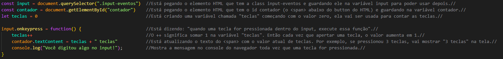

Agora vamos começar a realmente nos sentirmos programadores, pois finalmente vamos aprender uma linguagem de programação, o JavaScript, bora que tá só começando !
Daqui em diante é muito importante saber o conceito de Lógica de Programação e Algoritmos. A lógica de programação nada mais é que a forma de pensar
para resolver um problema, entender como, com base no conhecimento de como a ferramenta funciona, fazer com que você transforme sua ideia em realidade, ou resolver um
problema dado.
Já os algoritmos são um conjunto de regras ou instruções que devem ser seguidas para que com a ajuda da lógica de programação, seja possível essa realização, ou seja, as
instruções que devem ser seguidas para você se comunicar com a ferramenta.
Obs:
Abrir console no VSCode: Ctrl + Alt + N
O console.log("oq vc quiser escrever") é a função mais básica do Java Script, ela serve para escrever algo no console.
Para fazer a junção do HTML com o Java Script, basta criar um arquivo .js e colocar o código do Java Script no head do HTML. exemplo: < script src="JavaScript.js" defer > < script/>
Obs: Com o "defer" não precisa colocar o < script > no final, é uma boa prática.
As variáveis nada mais são que um espaço na memória do seu computador, onde você pode armazenar qualquer informação. Pode ser um número, uma frase, uma imagem, qualquer coisa.
E elas são:
let - São variáveis que PODEM ser ALTERADAS
const - São CONSTANTES que não podem ser alteradas
var - São variáveis que NÃO ESTÃO MAIS EM USO, ou seja, NÃO É PARA USAR MAIS
Exemplo:
Obs: Veja que o nome da variável começa com letra minúscula, e quando tem mais de uma palavra, a primeira letra de cada palavra é maiúscula para diferenciá-la (alunosDaTurma). Isso porque não pode haver espaço no nome da variável, nem começar com número ou caracteres especiais. Também não pode haver duas variáveis com o mesmo nome.
Podemos escrever no JS com "aspas duplas" , 'aspas simples' ou `crase` , a diferença é que com as aspas duplas ou simples, não é possível quebrar linha, já com a crase é possível, e
além disso, com a crase é possível usar expressões dentro do texto.
"Texto com aspas duplas"
'Texto com aspas simples'
`Texto com crase`
As template strings são uma forma de escrever texto usando a crase onde você pode colocar elementos de código dentro, e para isso se usa ${variável}, exemplo:
Os numeros no JS podem ser inteiros ou decimais (3.14) e podem ser usados para contas ou apenas textos, exemplo:
O null é o valor que uma variável tem quando ela não tem nada, ou seja, está sem resposta, exemplo:
let variavel = null
Já o undefined aparece quando uma variável é declarada, mas não tem um valor atribuído, ou seja, ela existe, mas seu valor não foi definido (é como se fosse um erro).
O boolean é um tipo de dado que só pode ter dois valores: true (verdadeiro) ou false (falso), ele é muito usado para fazer comparações e tomar decisões no código, exemplo:
As funções são trechos de código que só são executados quando são chamados. Elas são usadas para organizar o código e evitar repetições, e para criar uma função basta usar a palavra function
+ nome da função + parênteses + chaves, exemplo:
Essas são funções que permitem alterar o texto de um elemento do HTML.
Text Content - (constante que tá o texto.textContent) // SÓ HTML
Inner Text - (constante que tá o texto.innerText) // LEVA EM CONTA O CSS
Inner HTML - (constante que tá o texto.innerHTML) // TRAZ TUDO (permite usar tags HTML dentro do texto).
Exemplo:
Essas são funções que permitem alterar os elementos como se fosse no CSS.
Exemplo: A constante do elemento.style.propriedade CSS (color, fontSize, backgroundColor) = "novo valor"
Por exemplo se eu quiser mudar a cor de um botão que esta em uma constante button basta usar:
Obs: Quando se coloca uma propriedade que no CSS se usa o hífen (-) para separar as palavras, no JS se usa a letra maiúscula para separar as palavras, exemplo: background-color (CSS) = backgroundColor (JS).
São funções que permitem fazer cálculos matemáticos, exemplo:
Math.random() - Gera um número aleatório entre 0 e 1
Math.pow() - Calcula a potência de um número (2^2)
Math.sqrt() - Calcula a raiz quadrada de um número (√4)
Math.PI - Retorna o valor de PI
Também há essas outras funções que arredondam números:
Math.floor() - Arredonda um número para baixo
Math.ceil() - Arredonda um número para cima
Math.round() - Arredonda um número para o inteiro mais próximo
Exemplo:
Também é um método de fazer contas, como o Math, porém, além das operações simples que já sabemos (+, -, /, *) também há:
% - Resto da divisão
** - Potência
++ - Incremento
-- - Decremento
Exemplo:
É como os operadores aritméticos mas de uma maneira mais simplificada para economizar código, exemplo:
Dá pra usar todas as operações matemáticas que já vimos acima.
São operadores que comparam valores, exemplo:
== - Igual
!= - Diferente
=== - Igualdade de VALOR e TIPO
!== - Diferença de VALOR e TIPO
> - Maior que
< - Menor que
>= - Maior ou igual que
<= - Menor ou igual que
Exemplo:
São operadores que comparam valores, exemplo:
&& - E
|| - Ou
! - Não
& -> E -> Pessoa Exigente / Pessoa Obediente
true && true = true
true && false = false
false && false = false
| -> Ou -> Tanto faz / Filho Espertinho
true || true = true
true || false = true
false || false = false
! -> Negação / Do contra, inverte a resposta
!true = false ou !false = true
Exemplo:
typeof - Mostra o tipo de uma variável
delete - Deleta uma variável
Exemplo:
São grupos de informações relacionadas a uma variável. Por exemplo, um cadastro de um usuário: onde, ao invés de criar uma variável para cada informação do usuário, como nome, idade, email, etc., podemos
criar um objeto e dentro dele colocar todas essas informações. Ao fazer isso, se você der um console.log no objeto, ele vai imprimir todas as informações dele, exemplo:
Obs: Você consegue buscar apenas uma informação específica do objeto se quiser, basta colocar o ponto e a variável desejada, ex: console.log(usuario1.idade). Também dá para adicionar ou consultar mais informações colocando múltiplos pontos, caso exista um objeto dentro do outro, exemplo: console.log(usuario1.endereco.cidade) e assim por diante.
Você também pode criar objetos dentro de objetos, normalmente para organizar melhor as informações que possuem sub-informações, como por exemplo, um endereço, onde você tem o nome da rua,
número, cidade, estado, etc. Isso facilita na hora de buscar informações com o console.log. Para fazer isso, basta abrir uma nova chave após a variável ( endereço: {novas variáveis} ), exemplo:
Obs: Você pode alterar as informações do objeto, mesmo que ele seja criado com const. Basta colocar o nome da variável const + ponto + variável que deseja alterar = "novo valor", exemplo: usuario2.nome = "Cesar Rocha" ou usuario2.endereco.cidade = "São Paulo".
Uma array é como se fosse uma box de informações para facilitar a organização de dados relacionados, assim como facilitar posteriormente na busca e edição desses itens dentro da array, e
dentro dela é possível colocar qualquer tipo de informação, como números, textos, objetos, outras arrays, etc, e para criar uma array basta usar colchetes [ ] para colocar os elementos, exemplo:
Obs: Você consegue editar as informações dentro da array seguindo a mesma lógica que vimos anteriormente, exemplo: arrayUsuarios[0].nome = "Cesar Rocha" (nesse caso a posição
do elemento vai dentro dos colchetes [ ] da array);
No array, a ordem dos elementos se inicia no 0, ou seja, o primeiro elemento da array é o 0, o segundo é o 1 e assim por diante.
Os métodos de array são funções que podem ser usadas para manipular arrays. Alguns exemplos comuns são:
O if e o else são estruturas de controle de fluxo que permitem executar diferentes blocos de código com base em uma condição. ( Maior > Menor < ou Igual == )
O if é usado para verificar se uma condição é verdadeira. Você pode usar o if diversas vezes em um código;
Já o else é usado para executar um bloco de código caso a condição do if seja falsa, ou seja, é usado logo após um if, exemplo:
Obs: Quando se usa mais de um If pode ter mais que uma condição verdadeira!
Quando for usar a circunstância igual é necessário usar dois sinais de igual (==) para o JS entender que vc quer comparar os valores, e não atribuir um valor a variável.
O else if é usado para verificar se uma condição é verdadeira ou falsa, porém, você pode usar o else if diversas vezes em um código;
Exemplo:
Obs: Quando se usa If Else só uma condição pode ser verdadeira !
O operador ternário é uma forma mais curta de escrever um if e else, usando o ? como se fosse o if, e : como se fosse o else, exemplo:
? if (se)
: else (se não)
&& (if sem else)
O getElement é uma família de funções do JavaScript que permite acessar elementos do HTML para poder manipulá-los, ou seja, pegar um elemento do HTML e fazer algo com ele usando o JS,
como por exemplo, mudar o texto, a cor, a posição, etc. Para acessar o documento do HTML no JS, é utilizado o document. e para buscar o elemento, basta usar
document.getElementById("id do elemento"), exemplo:
O getElementById é uma função que permite pegar um elemento do HTML pelo id (id é único),exemplo:
document.getElementById("id-selecionado")
O getElementByClassName é uma função que permite pegar um elemento do HTML pelo class (class é múltiplo),exemplo:
document.getElementsByClassName("class-selecionada")
O getElementByTagName é uma função que permite pegar um elemento do HTML pelo tag (tag é múltiplo), nesse caso o getElementByTagName vai pegar todos os elementos da TAG selecionada
como p, h1, input, etc.exemplo:
document.getElementsByTagName("tag-selecionada")
O getElementByName é uma função que permite pegar um elemento do HTML pelo name (name é múltiplo), é igual o class mas usando a TAG name exemplo:
document.getElementsByName("nome-selecionado-do-name")
O querySelector é uma função que permite pegar o primeiro elemento do HTML que corresponda ao selecionado, ele usa o mesmo conseito do CSS para essa seleção, exemplo:
document.querySelector("seleção desejada") a seteção pode ser uma TAG (p, h1, input, etc) ou um ID (#id-selecionado) ou uma CLASS (.class-selecionada) e já que ele pega APENAS
o primeiro elemento que corresponde a seleção, também é possível por exemplo filtrar pela TAG e CLASS ou ID, exemplo:
document.querySelector("p.class-selecionada") ou document.querySelector("button.#id-selecionado")
Obs: Eu só consegui usar quando coloquei o código do Java Script depois do body, e abri no navegador.
O querySelectorAll é uma função que permite pegar todos os elementos do HTML que correspondam ao selecionado, usando o mesmo princípio do querySelector.
Os Eventos nada mais é que uma ação que o usuário faz na sua página, pode ser a abertura de uma nova aba, o clique em um botão, o clique em um link, etc.
Para aplicar esse atributo basta usar as funções começadas com "on" + nome do evento, exemplo: onclick, onmouseover, onmouseout, etc. Eessa função pode ser aplicada em qualquer
elemento no HTML como em um botão , link, inputs, etc.
Exemplo: No botão 1 foi feito uma função (function) usando o onclick para quando o botão for clicado ele executar um alert na página;
Ainda no exemplo abaixo eu usei o evento onkeypress para contar quantas teclas foram digitadas no input 1;

Veja algumas outras possibilidades na lista >>
O addEventListener permite adicionar um evento a partir de uma ação específica pré selecionada, como um click ou um change por exemplo:
ou
Também há uma outra forma de fazer esse código para capturar algumas informações do evento.
Para pegar informações do evento coloca qualquer palavra no parentêses do "function" e console.log (event):
Obs: A lista de eventos é a mesma que vimos anteriormente, a diferença é que eles vem com a palavra "on" no inicio, e no addEventListener eles vem sem a palavra "on".
O switch case é uma estrutura de controle de fluxo que permite executar diferentes blocos de código com base em uma resposta específica ( exemplo: 1, 2, ou 3), diferente do if e else que usa condições
( exemplo: de 1 a 5, de 5 a 10, maior que 10, etc), o switch usa respostas específicas, exemplo:
Obs: Eu usei o Switch Case dentro de uma function > addEventListener para eu pegar o que tava escrito no input e mostrar na tela. (Na dúvida, vale conferir).
O setTimeout é uma função que permite executar um bloco de código após um determinado tempo, exemplo: depois de 10 segundos no site executar um alert dando bom dia (uma vez só).
o setInterval é uma função que permite executar um bloco de código a cada determinado tempo, exemplo: a cada 10 segundos no site executar um alert dando bom dia (várias vezes).
Construção:
Obs: Você pode nomear essas funções set com se fosse uma variável, para depois por exemplo usar o clearTimeout ou clearInterval para cancelar a execução da função.
exemplo:
A estrutura de repetição for é usada para repetir um bloco de código um determinado número de vezes.
Obs: É usado uma váriavel para dizer a quantidade de vez que o bloco de código vai ser repetido, normalmente se usa a letra "i" para representar essa variável.
Construção:
Exemplo prático: Escrever no Console os nomes da lista abaixo:
Obs: O atributo .length é para pegar o tamanho do array, ou seja, quantas pessoas tem na lista.
Break é usado para parar o loop (interromper o código).
Continue é usado para pular uma interação do loop (interromper a interação atual e ir para a próxima).
Buscador de Contatos
Contatos: Rodolfo Paulo Aline e Maria
Obs: Nesse exemplo acima eu coloquei o for, e dentro dele um if para verificar se o nome digitado no input era igual ao nome da lista, se fosse ele mostrava na tela, se não fosse ele mostrava que não tinha encontrado. Também usei um addEventListener para quando apertar o botão de "Buscar" ele executar o for.
O for of é usado para iterar (mostrar) os itens de um array, como por exemplo essa lista de nomes que fizemos acima, exemplo:
Construção:
O for in diferente dos anteriores é usado para mostrar os itens de um objeto.
Construção:
O while é usado para repetir um bloco de código com uma condição, enquanto a condição for verdadeira ele vai repetir a ação, exemplo:
Já o do while primeiro executa o código e depois verifica a condição, exemplo:
Obs: Assim como visto anteriormente o break e o continue também podem ser usados aqui.
O forEach utiliza um array interligado a ele, para mostrar mais algumas informações que as ferramentas anteriores que vimos até agora não mostram, como por exemplo o index (posição do item 0, 1, 2, 3, no array),
item (são as linhas de informações dentro do array) e array (o array em si), exemplo:
Array e item:
Construção:
Obs: Se na hora de usar o index para mostrar as posições do array, você não quiser começar com o 0, basta usar (index + 1) no lugar do index.
Exemplo prático:
Resultado: no console:
1 - Nome: Rodolfo - Idade: 33 - Telefone: (19) 94343-3434
2 - Nome: Paulo - Idade: 21 - Telefone: (12) 93443-3434
3 - Nome: Aline - Idade: 40 - Telefone: (13) 94566-3434
4 - Nome: Maria - Idade: 12 - Telefone: (14) 94343-3476